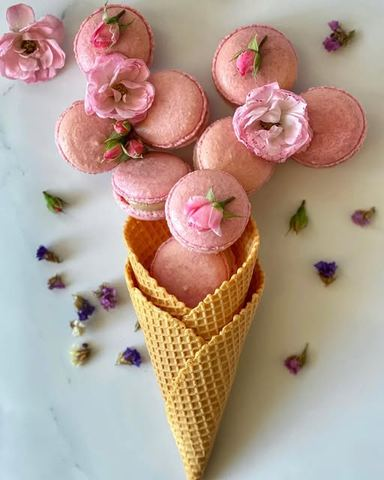

Čuveni macaronsi

Moja beleška
SačuvanoMinijaturni, jedni od onih koji staju na dlan, slatki toliko da poželite da krase sto za bilo koji bitan datum u vašem životu, a zanimljivo je to što ih možete bojiti u koju god boju da zamislite i uklopite uz svaku temu 🤗 Osnova od belanaca, šećera i bademovog brašna, svega par sastojaka, navodi vas da pomislite mogu ja to, ali oprez, vrlo je bitno ispratiti sve trikove koji su tu da pomognu da budu savršeni 💗 Savet br 1, digitalnu vagu u ruke i sve u gram i mililitar 😅
Sastojci
Priprema
Kremkaju se mućenim ganačeom. Ja sam ovog puta izabrala mlečnu čokoladu, koristite 100 gr mlečne čokolade i 100 ml slatke pavlake, čokoladu iseckate, nemućenu pavlaku ugrejete do vrenja, prelijte preko čokolade, sačekate minut i lepo sjedinite u tečnu smesu. Ostavite na hladjenju do samog kraja pripreme. A onda umutite mikserom u lepu kremastu teksturu koju ćete dresir kesom nanositi na 1 polovinu kolačića. Potrebno je da belanca umutite u čvrst šne i da kristal šećer dodajete postepeno. Kada su belanca umućena dodajete gel boju (minimalno, pa dodajete po potrebi) Od velike je važnosti da bademovo brašno i šećer u prahu prosejete bar 3 puta i sve to lagano umešate u belanca, do lepe tečne smese koja lagano klizi. Smesu sipate u dresir kesu i nanosite na papir za pečenje ili silikonski kalup ako ste nabavili za razliku od mene 😅 Potom lupnite plehom nekoliko puta o radnu ploču, pa čekajte nekih 40ak minuta do pečenja. Kada prstom lagano pipnete površinu makaronsa a ona se ne lepi, znak je da je spremno za rernu. Ja sam ih pekla nekih 20ak minuta u prethodno zagrejanoj rerni (160C) na 140C. Ali to morate proceniti prema jačini vaše rerne. Potpuno prohladjene kremkate 🌸 Savet: Video pripreme pogledajte kod divnih @chica_shtikla_i_kashika i @fle.kaa jer će vam zasigurno značiti koliko i meni 💗
Originalni opis sa Instagrama
Čuveni macaronsi 🌸🌸🌸 Minijaturni, jedni od onih koji staju na dlan, slatki toliko da poželite da krase sto za bilo koji bitan datum u vašem životu, a zanimljivo je to što ih možete bojiti u koju god boju da zamislite i uklopite uz svaku temu 🤗 Osnova od belanaca, šećera i bademovog brašna, svega par sastojaka, navodi vas da pomislite mogu ja to, ali oprez, vrlo je bitno ispratiti sve trikove koji su tu da pomognu da budu savršeni 💗 Savet br 1, digitalnu vagu u ruke i sve u gram i mililitar 😅 •••Recept: •••Fil Kremkaju se mućenim ganačeom. Ja sam ovog puta izabrala mlečnu čokoladu, koristite 100 gr mlečne čokolade i 100 ml slatke pavlake, čokoladu iseckate, nemućenu pavlaku ugrejete do vrenja, prelijte preko čokolade, sačekate minut i lepo sjedinite u tečnu smesu. Ostavite na hladjenju do samog kraja pripreme. A onda umutite mikserom u lepu kremastu teksturu koju ćete dresir kesom nanositi na 1 polovinu kolačića. •••Kolačići •70 gr belanaca (kod mene je to bilo otprilike 2 1/2 jaja) •40 gr kristal šećera •jestiva boja za kolače •80 gr bademovog brašna •120 gr šećera u prahu Potrebno je da belanca umutite u čvrst šne i da kristal šećer dodajete postepeno. Kada su belanca umućena dodajete gel boju (minimalno, pa dodajete po potrebi) Od velike je važnosti da bademovo brašno i šećer u prahu prosejete bar 3 puta i sve to lagano umešate u belanca, do lepe tečne smese koja lagano klizi. Smesu sipate u dresir kesu i nanosite na papir za pečenje ili silikonski kalup ako ste nabavili za razliku od mene 😅 Potom lupnite plehom nekoliko puta o radnu ploču, pa čekajte nekih 40ak minuta do pečenja. Kada prstom lagano pipnete površinu makaronsa a ona se ne lepi, znak je da je spremno za rernu. Ja sam ih pekla nekih 20ak minuta u prethodno zagrejanoj rerni (160C) na 140C. Ali to morate proceniti prema jačini vaše rerne. Potpuno prohladjene kremkate 🌸 Savet: Video pripreme pogledajte kod divnih @chica_shtikla_i_kashika i @fle.kaa jer će vam zasigurno značiti koliko i meni 💗 • • • #macaronsofinstagram #macarons #sitnikolačići #kolačići #proslava #divandan #francuskakuhinja #spremljenosljubavlju #buketkolaca #zadovoljnahr #uspjesnazena #foodphotographylove